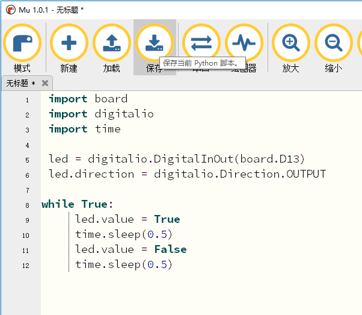

4. 创建和编辑Python代码¶
可以用很多文本编辑工具编写python代码，比如系统自带的记事本、Notepad 等。我们建议使用Mu。Mu支持CircuitPython，并集成了串口控制台，使用简单方便。
4.1. 创建代码¶
打开Mu工具，点击左上角“新建”按钮创建一个文件。

拷贝并黏贴以下代码到Mu代码编辑窗口
1 2 3 4 5 6 7 8 9 10 11 12 | import board
import digitalio
import time
led = digitalio.DigitalInOut(board.D13)
led.direction = digitalio.Direction.OUTPUT
while True:
led.value = True
time.sleep(0.5)
led.value = False
time.sleep(0.5)
|
注解
需要注意while True以下的四行需要缩进对齐

点击“保存”按钮，以文件名“code.py”保存到CIRCUITPY磁盘。
保存成功后，python程序自动运行起来，将能看见红灯在闪。 恭喜你在编程圆上成功运行了第一个Python程序。
4.2. 编辑代码¶
修改或再次编辑编程圆上的Python程序，点击“加载”按钮，加载CIRCUITPY磁盘上的“code.py”进行修改。
根据需求修改完可直接保存生效。一旦“code.py”修改并保存了，程序能重新自动启动运行。
警告
不需要拔除USB或者按“reset”按钮，修改完程序保存就能自动运行。
编程圆会自动检测文件是否修改更新，并自动重启代码。